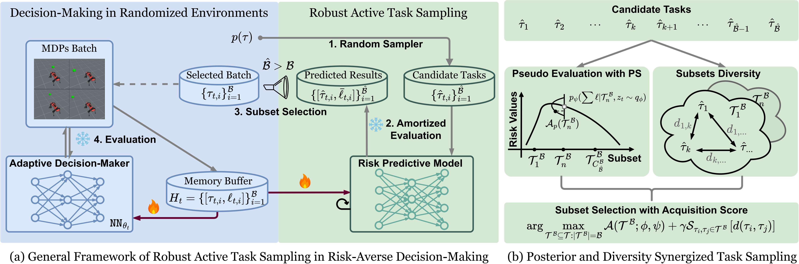
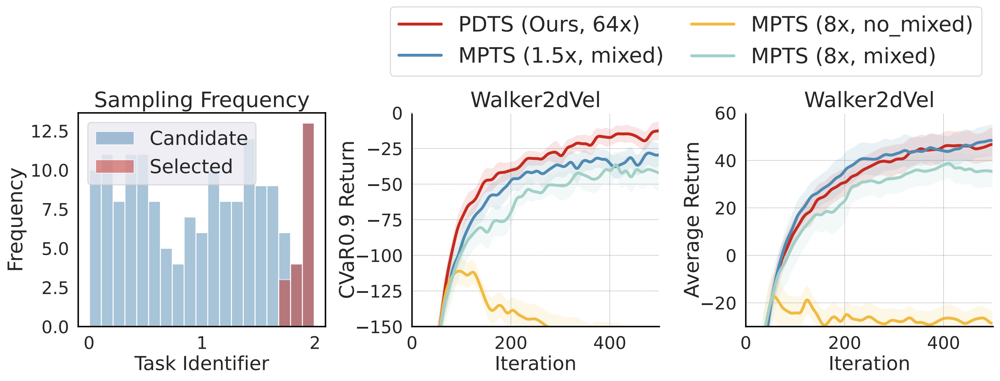
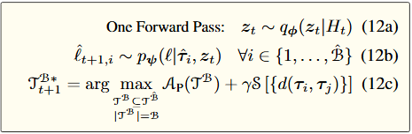
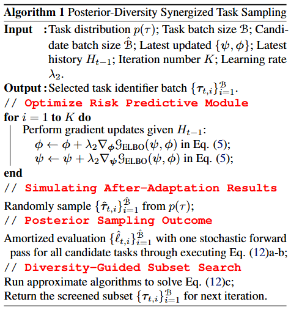
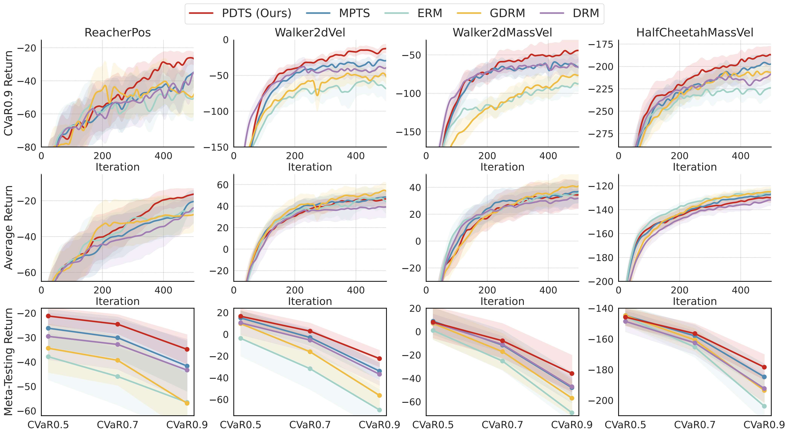
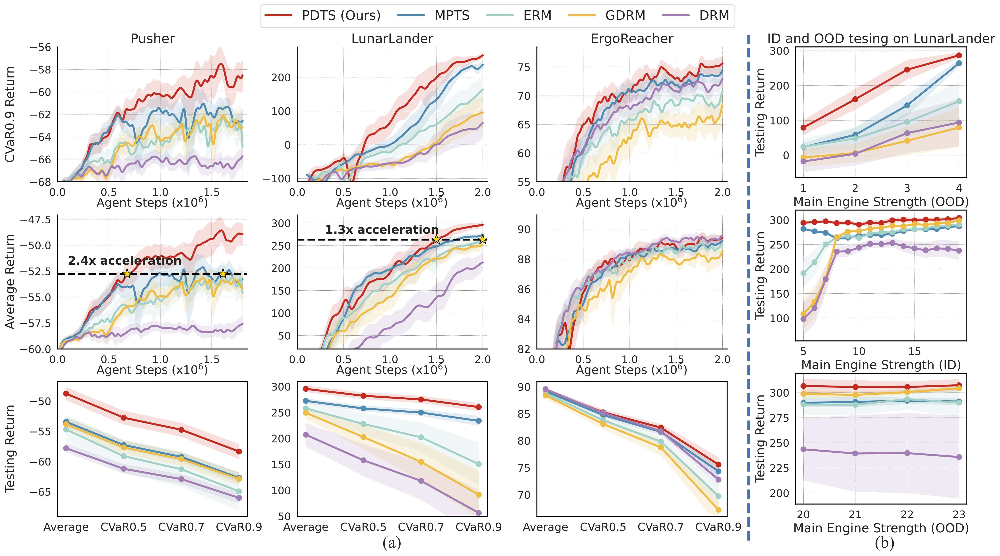
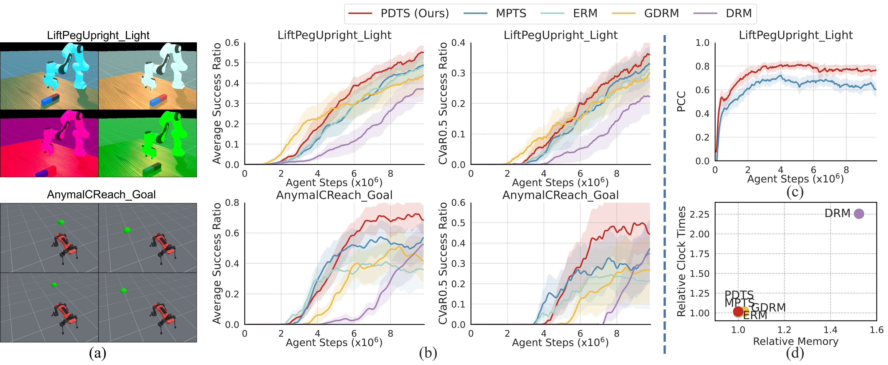

Fast and Robust: Task Sampling with Posterior and Diversity Synergies for Adaptive Decision-Makers in Randomized Environments
Authors: Yun Qu, Qi (Cheems) Wang, Yixiu Mao, Yiqin Lv, Xiangyang Ji
Affiliation: Tsinghua University
Link: https://github.com/thu-rllab/PDTS/*
🚀 Introduction: Toward Fast and Robust Adaptation
Modern adaptive decision-makers like reinforcement learning agents or foundation models often operate in highly dynamic environments. A long-standing goal is to ensure these agents can robustly adapt to unseen or out-of-distribution (OOD) scenarios. However, methods like Conditional Value-at-Risk (CVaR), though robust, suffer from intensive computational cost due to exhaustive task evaluation.
To address this challenge, the authors introduce Posterior and Diversity Task Sampling (PDTS), a new method for robust active task sampling that achieves stronger adaptation robustness with minimal overhead. The key idea is to treat task selection as a secret MDP and leverage posterior sampling and diversity regularization to efficiently select challenging tasks.
🧠 Motivation: What Makes Adaptation Difficult?
In meta-reinforcement learning (Meta-RL) and domain randomization (DR), agents must generalize to new MDPs sampled from a task distribution. Real-world deployments (e.g., autonomous driving or robotics) demand robustness to rare but high-risk events. However, sampling tasks uniformly from a task distribution misses these critical edge cases.
To bridge this gap, PDTS prioritizes task selection based on: - Predicted adaptation risk (from a learned risk predictive model), - Task diversity (to avoid overfitting narrow regions), - Posterior sampling (to simplify and optimize task sampling).
This framework is analyzed in a theoretical task-selection MDP abstraction and empirically improves robustness across multiple benchmarks.

⚙️ Methodology: From Theory to Practical PDTS
🧩 Setting: Meta-RL and Domain Randomization
Each task is modeled as an MDP \(\tau \in \mathbb{R}^d\) with support data \(\mathcal{D}_\tau^S\) and query data \(\mathcal{D}_\tau^Q\). The adaptation risk is measured by \(\ell(\mathcal{D}_\tau^Q, \mathcal{D}_\tau^S; \theta)\), and the goal is to optimize for worst-case performance under a task distribution \(p(\tau)\).
📈 Step 1: Risk Prediction via Variational Generative Model
A VAE-style generative model predicts adaptation risk: \(\mathbb{E}_{q_\phi(z_t|H_t)}[p_\psi(\ell|\tau, z_t)]\) where \(H_t\) is the task history and \(z_t\) summarizes adaptation dynamics. This amortizes costly environment interactions.
🎯 Step 2: Robust Subset Selection via i-MAB
The task space is viewed as an infinite-armed bandit (i-MAB): - State: model parameters \(\theta\) - Action: select task batch \(\mathcal{T}_{t+1}^\mathcal{B}\) - Reward: reduction in CVaR - Goal: maximize cumulative robustness gain
PDTS samples tasks based on: $ \mathcal{A}(\mathcal{T}^\mathcal{B}) + \gamma \cdot \text{Diversity}(\mathcal{T}^\mathcal{B}) $ with diversity measured via pairwise distance in \(\tau\)-space, which addresses the concentration issue in MPTS.

🔄 Step 3: Posterior Sampling Instead of UCB
Unlike UCB-based MPTS, PDTS uses posterior sampling: $ z_t \sim q_\phi(z_t | H_t), \quad \ell_i \sim p_\psi(\ell | \tau_i, z_t) $ This avoids dedicated hyperparameter tradeoff and encourages stochastic optimism.


📊 Results: Faster and More Reliable Learning
PDTS is benchmarked across: - Meta-RL: MuJoCo tasks like Reacher, Walker2d, HalfCheetah. - Physical DR: Domain randomization with randomized physics properties, including tasks like Pusher, LunarLander, and ErgoReacher. - Visual DR: LiftPegUpright (light randomized), AnymalCReach (goal randomized).



✅ Highlights:
- Best CVaR@0.9 performance in almost all tasks.
- Outperforms DRM and MPTS without expensive task evaluation and hyperparameters tuning.
- Superior exploration with larger candidate batches (\(\hat{\mathcal{B}} = 64 \cdot \mathcal{B}\)).
- Accelerated learning (2.4× faster in Pusher, 1.3× in LunarLander).
- OOD generalization improves dramatically (e.g., in LunarLander).
- Minimal overhead: runtime increase is negligible compared to traditional risk-averse baselines DRM.
🧠 Insights and Future Work
PDTS provides a plug-and-play solution for robust adaptive learning in randomized environments. By integrating posterior inference and diversity-regularized selection, it achieves nearly worst-case optimization without sacrificing scalability.
Future directions: - Enhanced risk models with better uncertainty quantification, - Integration with multimodal agents or language models, - Real-world deployment in robotics and decision-critical AI.
📌 Conclusion
The PDTS framework redefines how adaptive agents should sample tasks for training. Instead of brute-force evaluation or handcrafted priors, PDTS offers a principled, efficient, and scalable alternative to boost both robustness and efficiency in learning under uncertainty. Whether you're training a robot, an AI assistant, or a simulation policy, PDTS makes your adaptation faster, robuster, and smarter.